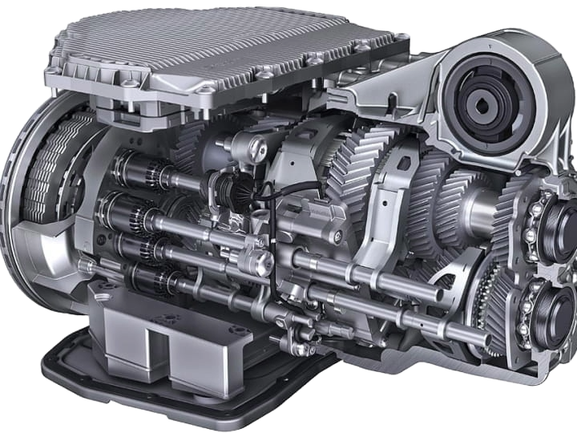

The Porsche 911 GT3 RS features a highly advanced gearbox engineered for high-performance driving.
The Porsche 911 GT3 RS features a 7-speed PDK (Porsche Doppelkupplung) gearbox. The PDK gearbox is a dual-clutch transmission system that provides lightning-fast gear changes. The PDK gearbox is designed to deliver smooth and precise gear changes, allowing the driver to focus on the road and enjoy the driving experience. The PDK gearbox also features a manual mode, allowing the driver to take control of gear changes using the paddle shifters located on the steering wheel.